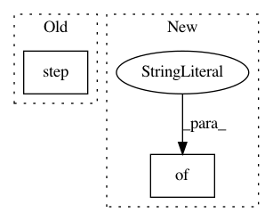

d6ee34c979aaef712809f77d9c5693ba0090633a,cistar-dev/build-tester.py,,,#,9
Before Change
25, 25, 25, 25])
exp.env.reset()
for _ in range(10):
exp.env.step(
[15, 15, 15, 15, 15, 15, 15, 15, 15, 15, 15, 15, 15, 15, 15, 15, 15, 15, 15, 15, 15, 15, 15, 15, 15, 15, 15, 15,
15, 15, 15, 15])
exp.env.terminate()
After Change
net_params = {"length": 200, "lanes": 1, "speed_limit":35, "resolution": 40, "net_path":"debug/net/"}
cfg_params = {"start_time": 0, "end_time":3000, "cfg_path":"debug/cfg/"}
initial_config = {"shuffle":False}
scenario = LoopScenario("test-exp", type_params, net_params, cfg_params, initial_config)
In pattern: SUPERPATTERN
Frequency: 3
Non-data size: 2
Instances
Project Name: flow-project/flow
Commit Name: d6ee34c979aaef712809f77d9c5693ba0090633a
Time: 2017-02-20
Author: kanaadp@gmail.com
File Name: cistar-dev/build-tester.py
Class Name:
Method Name:
Project Name: cornellius-gp/gpytorch
Commit Name: c63cc933782e2de32c9fe74c18b337b2bbe0f242
Time: 2018-07-19
Author: jrg365@cornell.edu
File Name: test/examples/test_kissgp_variational_regression.py
Class Name: TestKissGPVariationalRegression
Method Name: test_kissgp_gp_mean_abs_error
Project Name: dpressel/mead-baseline
Commit Name: 029fdb5624fafee03a59f49d86b676f25851febf
Time: 2017-11-22
Author: dpressel@gmail.com
File Name: python/baseline/tf/tfy.py
Class Name:
Method Name: show_examples_tf